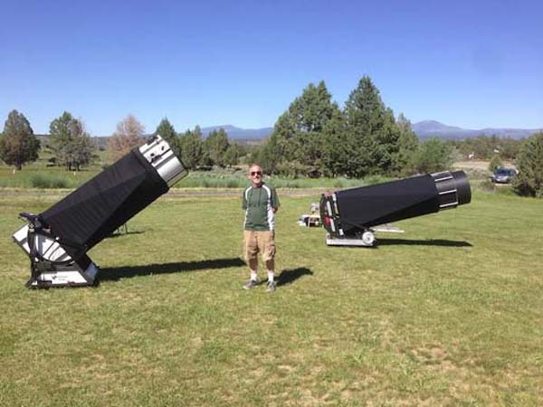

OR: Observing in June on the Modoc Plateau (Part I)
by Steve Gottlieb
|
Over the new moon window in June, I met with friends Jimi Lowrey (from Fort Davis, TX), Howard Banich (from Portland, OR) and Al Smith (from Santa Cruz, CA) for four nights of deep sky observing at the Likely Place Golf & RV Resort, about 20 miles south of Alturas in the northeast corner of California. In addition, telescope maker Tom Osypowski and astro-image Tony Hallas (a regular at the site) were also there for the weekend. This was my second trip to Likely, which is located on the Modoc Plateau at 4600 ft about an hour east of the GSSP site in Adin. The site is within a "black" light pollution zone – meaning very minimal of zero light pollution – with the only noticeable glow a weak brightening on the northern horizon. Typical SQM readings (measured by Howard) were in the 21.65-21.8 range and occasionally higher. Seeing generally started off soft in the early evening, but improved as the night progressed. 
As a new observing project, I've been going back to NGC and IC galaxies that I've previously observed as single objects, but the Sloan Digital Sky Survey revealed are actually double or merging systems with two galactic nuclei. Most of the systems in the first part of this observing report fit this description. In general, the original discoverer only noted a single object, but in a couple of cases a double star was noted as involved with the glow -- the double was probably the twin nuclei of the merged pair of galaxies. -- Steve Gottlieb |
|
NGC 5491
NGC 5491 At 260x, the main galaxy appeared moderately bright, fairly small elongated 4:3 WSW-ENE, 40"x30", contains a small bright core. It forms a close pair with NGC 5491B at the north edge of the halo, just 25" from the center! At 375x (6mm ZAO) the compact companion appeared very faint (V = 15.4), nearly stellar, visible ~1/3 of the time. A mag 14.8 star is 0.9' NE and a second mag 15 star is 1.0' SW. Double star BRT 2158, a mag12.5/12.7 pair at 4.5", lies 2.7' NE.
NGC 5531 German astronomer Heinrich d'Arrest discovered NGC 5531 on 7 Feb 1862 with the 11-inch refractor at the Copenhagen observatory. This is another very close double system. NGC 5531 appeared fairly faint, round, 30" diameter. It forms a merged pair with SDSS J141643.57+105252.4 = LEDA 4409321 barely within the halo, just 16" SSE of center. At 375x (6mm ZAO) the small companion appeared as a faint (V = 15.7), very small extension at the south-southeast edge of the halo.
NGC 5532 William Herschel discovered NGC 5532 = H III-47 on 15 Mar 1784 with his 18.7-inch speculum reflector. He logged "vF, r. I see two or three stars in it." One of Herschel's "stars" is very possibly the companion at the south-southeast edge that I picked up. In my 24-inch, NGC 5532 appeared moderately to fairly bright, round, 0.8' diameter. Sharply concentrated with a bright core that increases to a very bright, quasi-stellar nucleus. It forms a close, physical pair with NGC 5532B = PGC 214240 just 34" S of center. At 375x the companion appeared faint to fairly faint (V = 14.4), very small, 12"x8", contains a faint stellar nucleus. NGC 5531 lies 5.2' NNW.
NGC 5534
NGC 5534 is an interacting, merging pair. The main western component is moderately bright and large, elongated 3:2 SW-NE, sharply concentrated with a small bright core and stellar nucleus, 40"x25". The dwarf companion Ho 623B = PGC 51057 is attached on the east side with the centers separated by just 26" (measured on the DSS2). At 375x it appeared faint, very small, round, 12" diameter, visible continuously. At 200x, NGC 5534 is situated within a distinctive 12' string of 5 stars mag 10.5-12.5 extending southwest to northeast. Mag 6.5 HD 125184 lies 9' SE.
NGC 5591 At 375x; the brighter western component of this merged, interacting double system appeared fairly faint, fairly small, elongated 3:2 E-W, roughly 0.6'x0.4', brighter core, fairly low surface brightness. The attached eastern component (PGC 93125) is elongated 5:2 E-W, ~0.5'x0.2' and contains a small, slightly brighter nucleus or knot, 6"-8" in diameter. The two nuclei are just 22" apart (measured on the DSS2)!
NGC 5654 At 260x I recorded moderately bright, fairly small, oval 3:2 NNW-SSE, small bright core. But at 375x NGC 5654 resolved into two merged components! The brighter nucleus is on the northwest side with the main glow of the galaxy offset mostly south-southeast. Often a fainter quasi-stellar nucleus (PGC 3577442 = SDSS J143001.68+362129.5) was seen very close south-southeast of the brighter nucleus. The two nuclei are just 12" apart! A mag 10 star lies 5.4' NNW and mag 9 HD 127505 is 9' E. William Herschel discovered NGC 5654 = H III-420 on 1 May 1785. John Herschel made the single observation "pF; nucleus elongated, or has a F double * in it. Pos = 115.5°± (micrometer)". So, John apparently resolved the double nucleus!
NGC 5675 NGC 5675 is moderately to fairly bright, fairly large, elongated 5:2 NW-SE, 1.5'x0.6', bright core. UGC 9350, located 7.8' W, is fairly faint, fairly small, thin edge-on 4:1 SSW-NNE, 36"x9". Situated just 30" W of a mag 11.3 star that detracts somewhat from viewing.
IC 1032 = I Zw 91 American comet and nebula hunter Lewis Swift discovered IC 1032 on 6 May 1888 with the 16-inch refractor at his Warner Observatory in Rochester, New York. My first observation of IC 1032 and 1033 was back in 2007 while viewing the 7th magnitude comet C/2006 VZ13 (LINEAR), which was in the same field of view! IC 1032 appeared fairly faint, small, round, 20" diameter, fairly high surface brightness. The double nucleus (PGC 52097 and PGC 416489) was not resolved - I'll give it another try. IC 1033, just 1.9' SSE, appeared fairly faint, fairly small, round, bright core, 25" diameter. IC 1031 is also nearby 4.9' NW. The trio is known of WBL 515. |